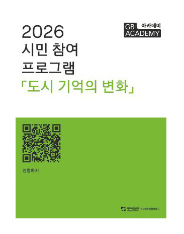
출처: 광주비엔날레
도시를 걸으며 만나다
도시 기억의 변화
전문 해설사와 함께 제16회 광주비엔날레의 주제인 변화를 따라 광주의 역사와 기억, 예술을 직접 걸으며 만나는 시민 참여형 무료 투어
- 코스
- 5·18민주화운동기록관
- 전일빌딩245
- 은암미술관
- 국립아시아문화전당
- 일시제16회 광주비엔날레 기간 매일 11시/14시
- 참여방법광주비엔날레 누리집 사전 예약
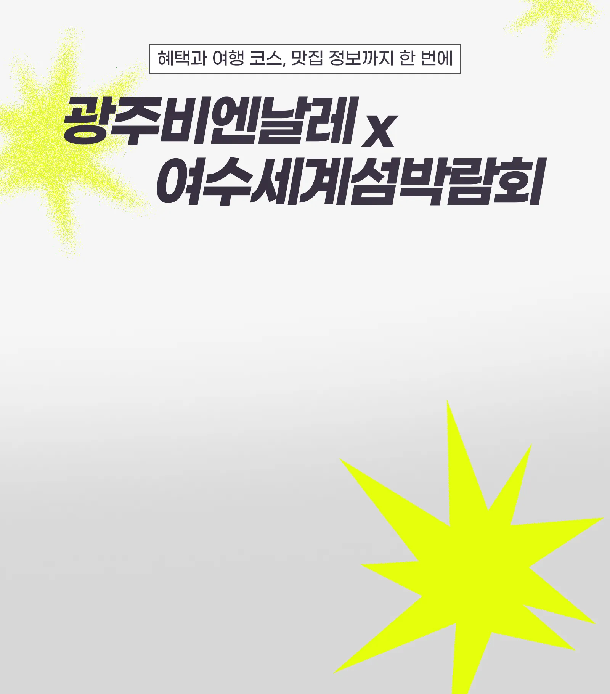
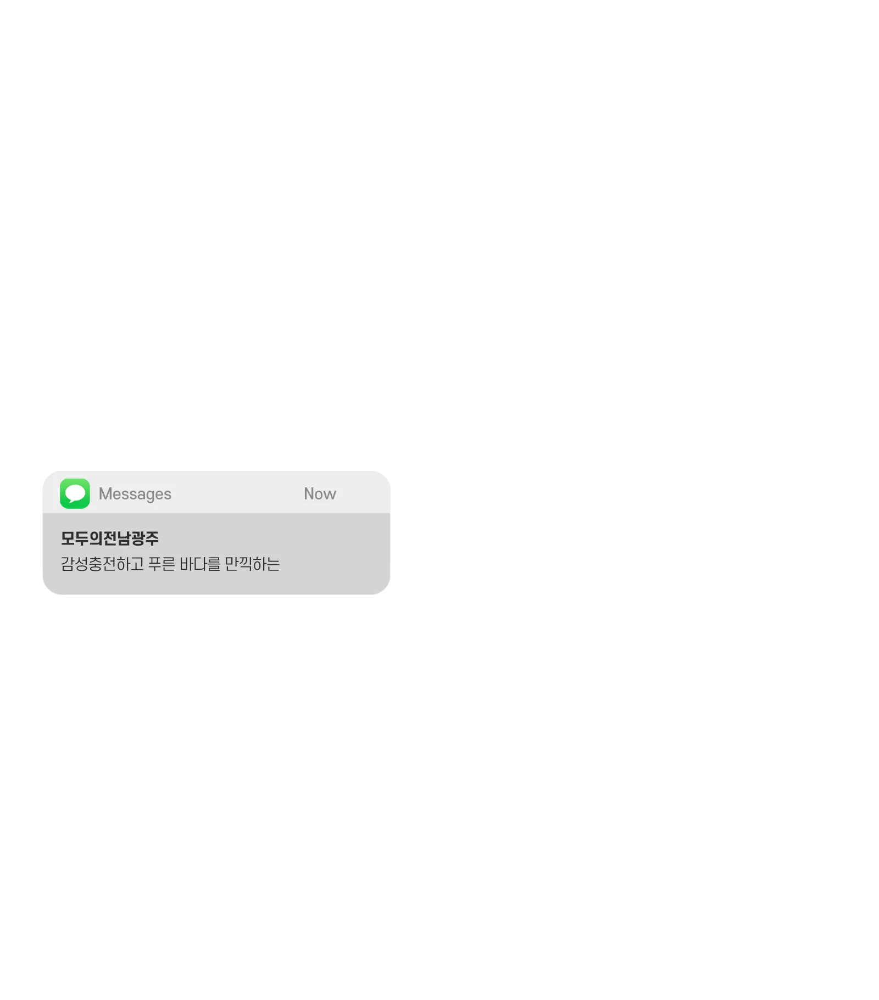
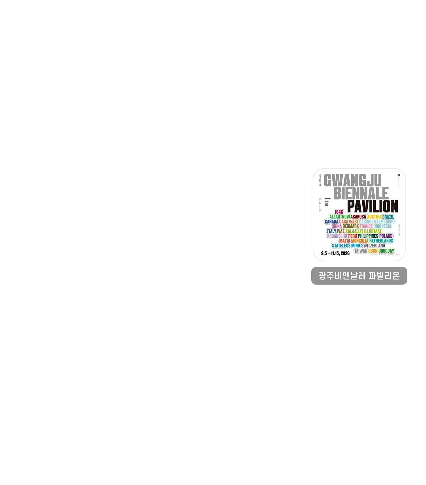
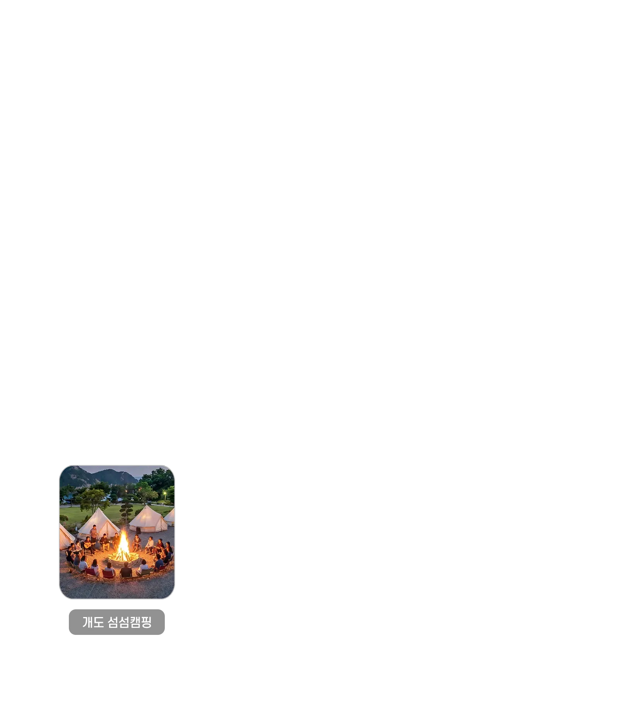
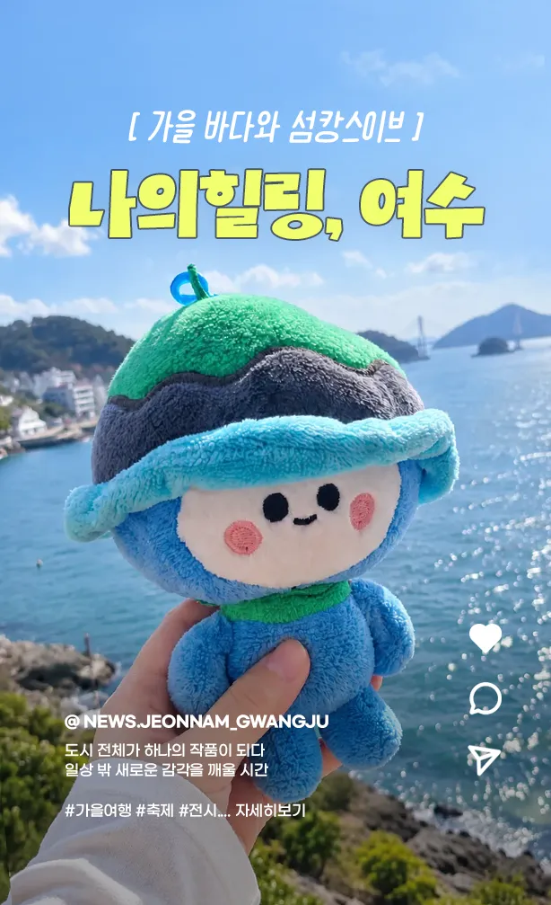
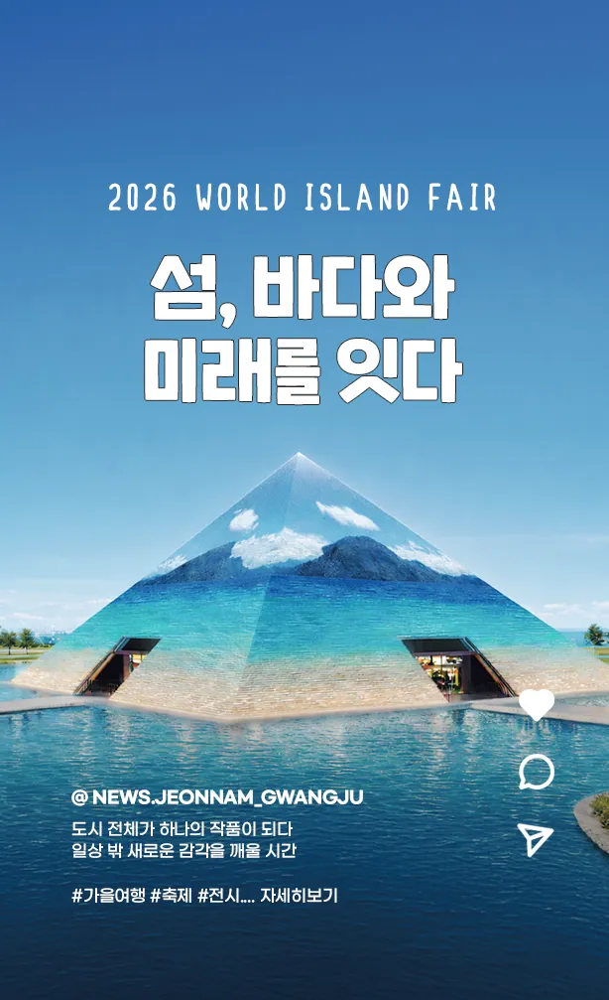
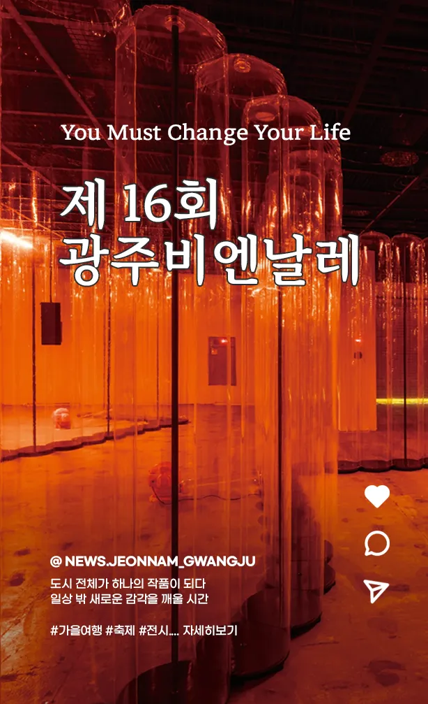
전남광주통합특별시가 40년 만에 다시 하나가 되어 같은 날 축제가 열렸습니다.
생일이 같다면? 두 배로 축하해야죠!
9월 5일 동시에 개막한 제16회 광주비엔날레와 여수세계섬박람회의
이모저모와 함께 즐겼을 때 더 즐거운 두 축제의 꿀잼 모먼트를 알려드릴게요.
제16회 광주비엔날레와 여수세계섬박람회는 2026년 9월 5일 같은 날 개막했어요.
두 축제 모두 선선한 가을바람과 함께 즐기기 좋은 시즌에 열려요.
제16회 광주비엔날레
여수세계섬박람회
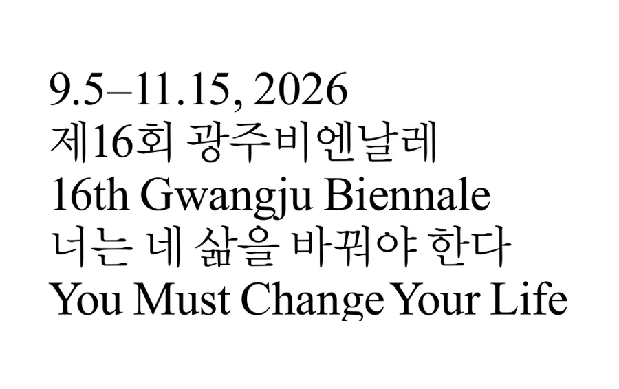
광주비엔날레
올해로 30주년을 맞은 광주비엔날레는 아시아 최초의 비엔날레이자 국제 미술 매체 아트넷이 선정한 ‘세계 5대 비엔날레’에 베네치아 비엔날레 등과 함께 이름을 올린 국제적인 행사예요.
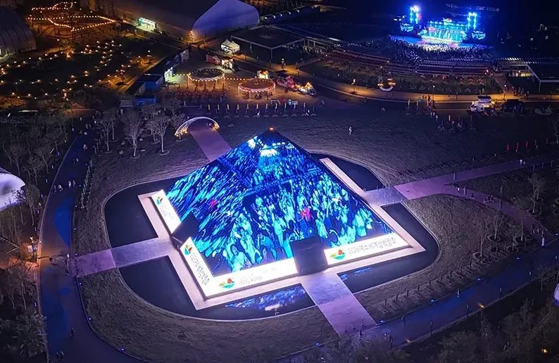
여수세계섬박람회
여수세계섬박람회는 섬의 가치를 재발견하고 세계인의 공감대를 형성하기 위한 국제 행사예요. 전 세계 30여 개국이 참여하고 있어요.
전시장에만 머물러 눈으로만 보는 행사가 아니에요. 광주비엔날레는 이번에도 양림동을 비롯한 광주 곳곳에 파빌리온을 마련해 전시의 폭을 넓혔고, 여수세계섬박람회는 여수의 섬들을 직접 체험하는 방식으로 기획되었어요.

출처: 광주비엔날레
도시를 걸으며 만나다
전문 해설사와 함께 제16회 광주비엔날레의 주제인 변화를 따라 광주의 역사와 기억, 예술을 직접 걸으며 만나는 시민 참여형 무료 투어
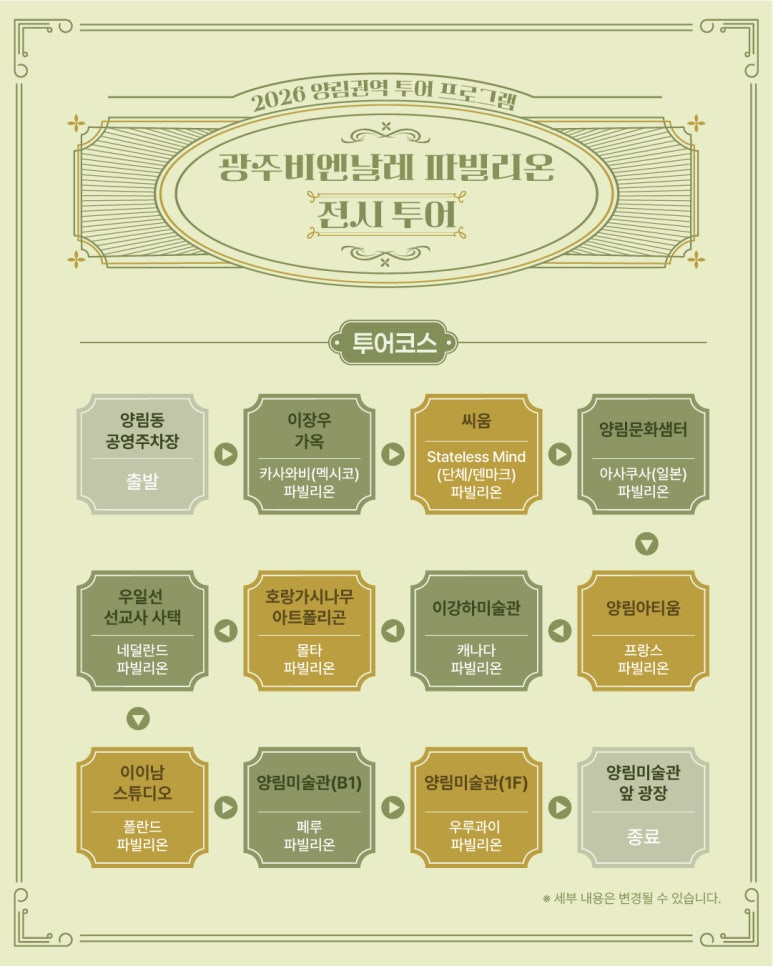
출처: 광주비엔날레
양림동으로 떠나는 세계 미술 여행
양림동 곳곳에 흩어진 광주비엔날레 파빌리온 10개관을 도슨트와 함께 둘러보세요.
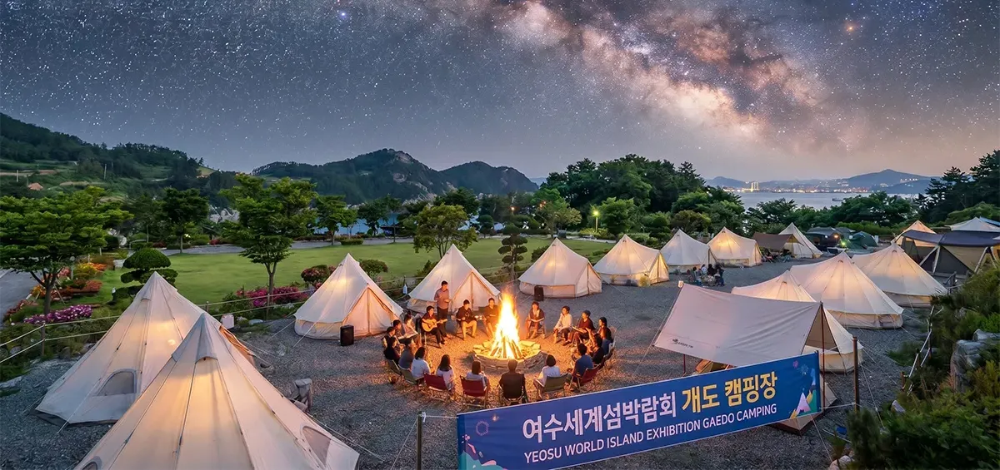
출처: 여수세계섬박람회
아름다운 섬에서 캠핑을
아름다운 개도에서 캠핑과 전통 놀이, 갯벌 체험, 해양 레저 스포츠를 즐겨요!
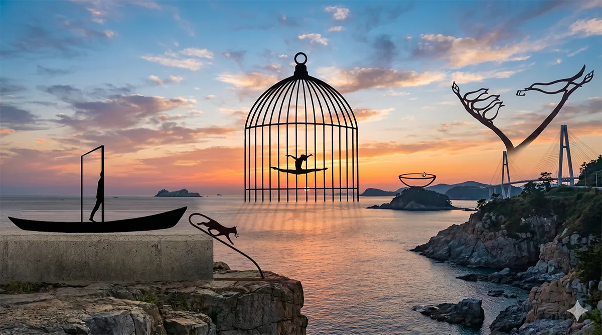
출처: 여수세계섬박람회
개도의 매력에 빠져보세요
청석포 해수욕장부터 개도 도가에서 막걸리 주조 체험까지 섬의 주요 스팟을 함께 투어해요.
놓치면 아쉬운 두 축제를 저렴하게 만나는 법, 광주비엔날레와 여수세계섬박람회는 교차할인 중!
섬박람회
티켓 제시
비엔날레
티켓 제시
이용방법
여행 부담은 반으로, 섬 여행의 즐거움은 두 배로! 축제도 즐기고 섬 여행도 합리적으로 즐겨보세요.
지금 전남광주통합특별시는 전국 최초 섬 반값 여행을 시행하고 있어요.
여행기간2026.08.29.(토)~11.04.(수)
지원내용1인당 총 1회,
20만원 이상 소비 시 10만원 한도 환급
대상지역
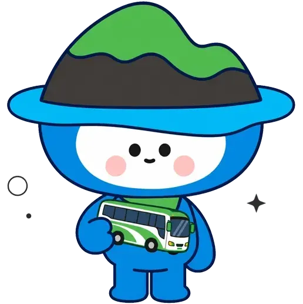
남도한바퀴가 여수세계섬박람회와 연계한 특별 코스 운영을 시작했어요.
저렴한 가격으로 광주에서 여수로 떠나볼까요?
※ 광주비엔날레 연계 코스, 비엔날레↔섬박람회 코스도 운행 예정
1. 자차 이용약 1시간 30~40분
2. 고속버스 이용약 1시간 40분
광주↔여수를 이동할 때 KTX와 비행기로 이동하는 건 비효율적이에요.
직통과 직항이 없어 익산을 경유해 시간이 더 걸린답니다. 자차나 고속버스를 이용하는 게 좋아요.
고속버스를 이용하면 이동이 불편하지 않을까? 걱정이라면 그 걱정은 넣어두세요. 광주비엔날레와 여수세계섬박람회가 그 고민까지 해결했답니다.
두 축제는 하루를 몽땅 써도 부족할 정도로 볼거리가 많아요. 각각 하루를 할애한다는 생각으로 방문해야 충분히 즐길 수 있어요. 하루 이상 머무를 생각이라면 10월 중 추진 예정인 ‘2026 하반기 여행가는 달’ 캠페인과 ‘숙박할인 페스타’를 활용하는 것도 팁!
하나투어에서 올가을을 만끽할 호남 패키지 여행을 준비했어요.
광주비엔날레와 여수세계섬박람회를 만날 수 있는 대표 상품을 소개할게요.
축제도 즐기고 광주와 여수의 매력을 만날 수 있는 추천 코스를 소개합니다.
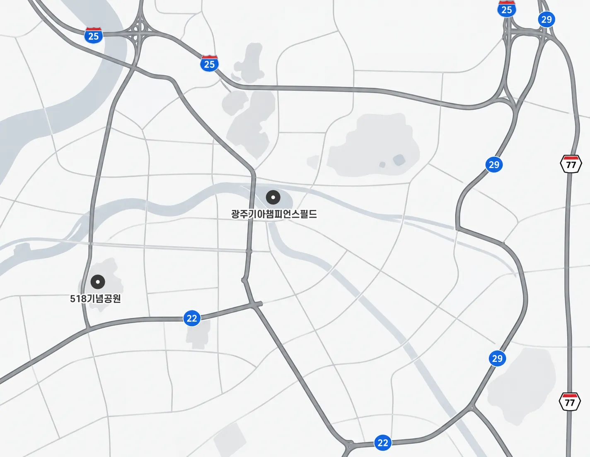
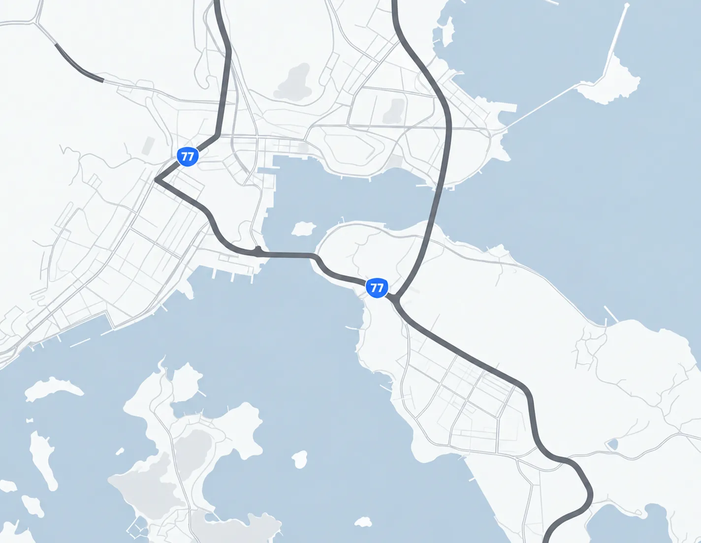
광주 광주비엔날레 중심 코스
여수 여수세계섬박람회 중심 코스
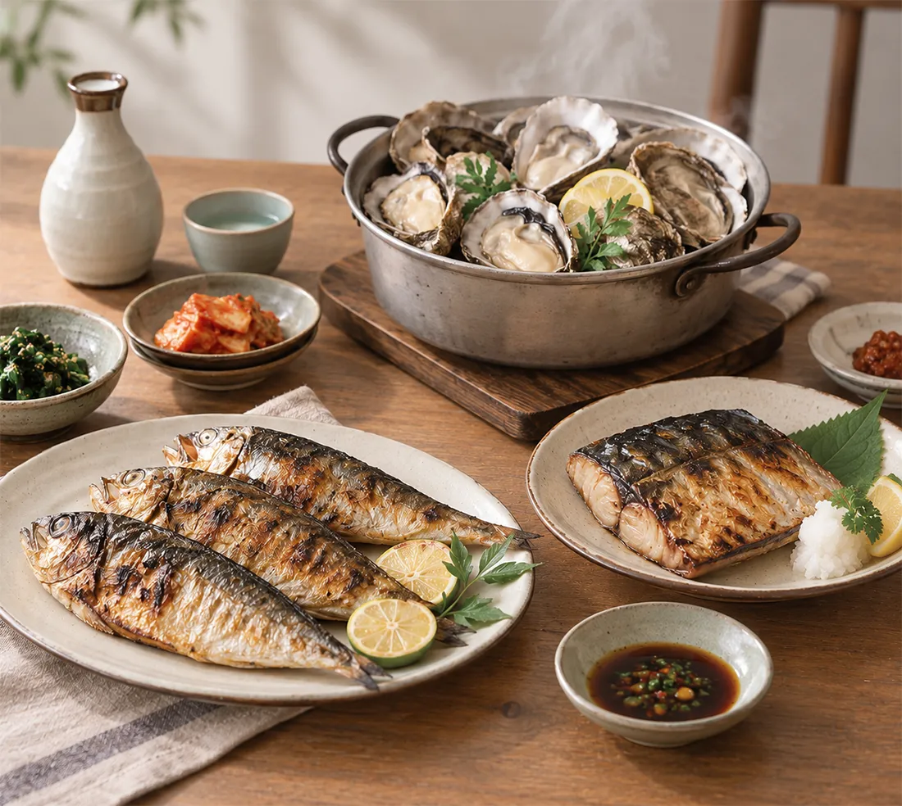
여수 10미(味)인 전어와 삼치, 굴은 가을이 되며 맛이 오르기 시작하는 여수의 제철 식재료예요.
출처: 다현정식
북구 비엔날레로 183-5
깊은 풍미의 꽃게탕과 매생이탕이 인기
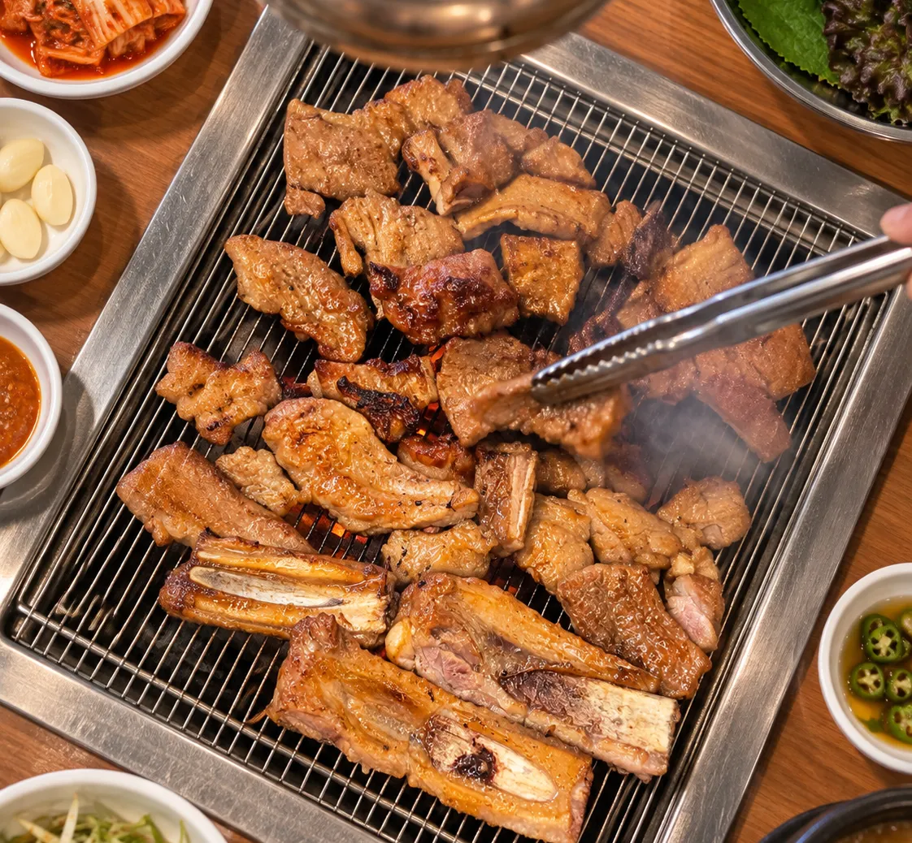
출처: 원기옥
북구 비엔날레로 134 1층
쟁반냉면과 함께하는 갈비의 환상 조합
출처: 구전국밥
북구 용봉택지로 69 1층
할매김치가 킥인 광주국밥의 정석
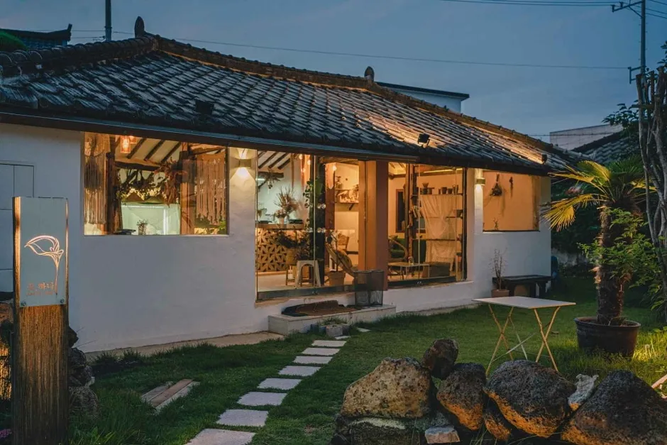
출처: 한국관광공사
전남광주통합특별시 동구 문화전당역 4번 출구에서 537m 일대
양림동 파빌리온 주변
광주비엔날레는 용봉동 먹자골목과 가까워요. 조개구이, 곱창, 국밥, 횟집 등 다양한 식당이 모여 있으니 취향대로 골라 드세요.
여수의 제철 식재료로 차린 건강한 가정식 백반을 맛보고 싶다면 여수시가 지정한 섬힐링밥상 식당을 이용하세요.
섬별 지정 업소 확인하기(예약 필수)검증된 맛집 여수세계섬박람회 지정 음식점도 알려드릴게요.
2026 여수세계섬박람회 지정 음식업소